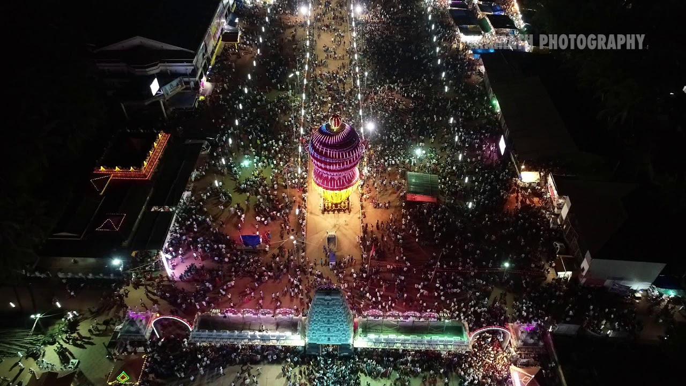
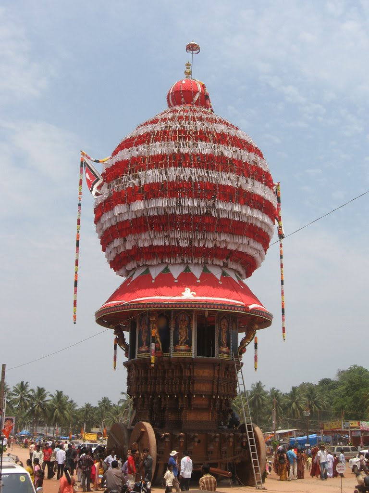
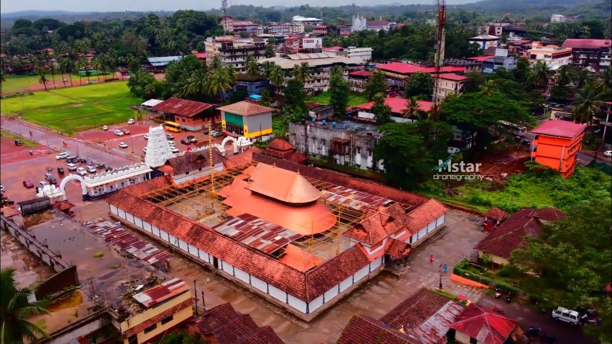
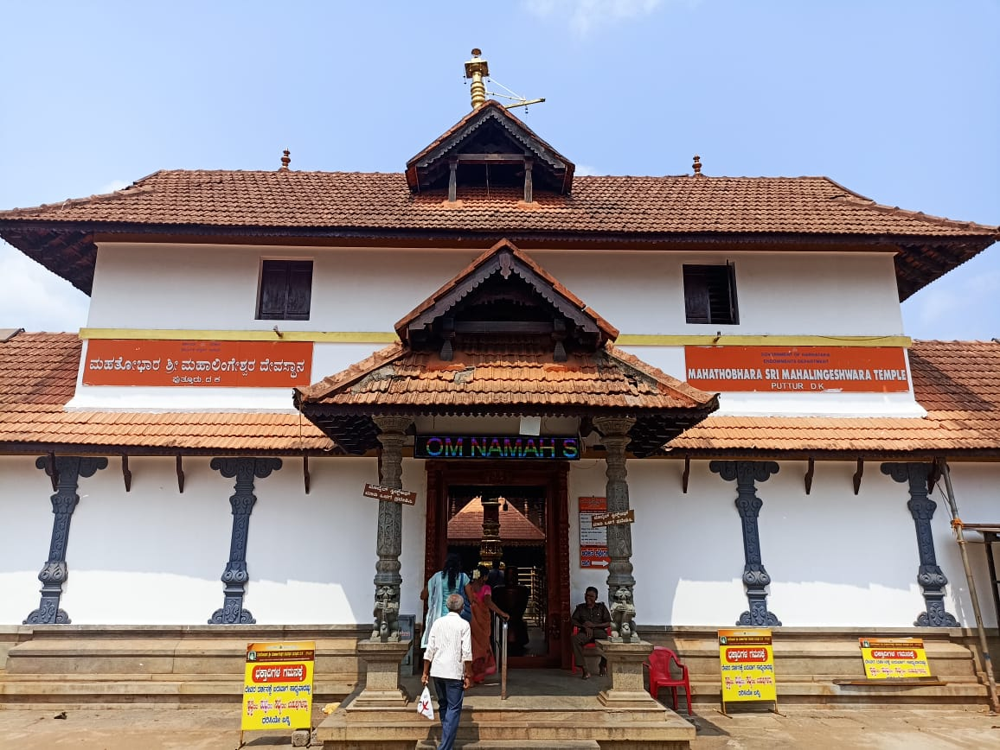

Puttur Shree Mahalingeshwara Temple is a historic 12th-century Hindu temple in Puttur, Dakshina Kannada, Karnataka. Dedicated to Lord Shiva, worshipped as Mahalingeshwara, it is one of the region's most sacred temples.
The temple originally stood near the Kumaradhara River. Repeated flooding led to its relocation to the present site, where tradition says a divine sign indicated the new location.
Devaraya Ballala played a major role in rebuilding the temple. The sanctum was renovated between June 2012 and May 2013 under the Sri Mahalingeshwara Devasthana Brahmakalashotsava Committee.
Ancient Shiva temple with centuries of history.
A revered shrine dedicated to Lord Shiva.
Moved from the Kumaradhara River due to floods.
A major spiritual centre attracting thousands of devotees.




| Location | Distance |
|---|---|
| Puttur Bus Stand | 0.5 km |
| Puttur Railway Station | 1 km |
| Mangalore International Airport | 70 km |
| Mangalore City | 50 km |
| Bengaluru | 312 km |
Photography: Allowed
Entry Fee: Free
Location: Puttur, Dakshina Kannada, Karnataka, India